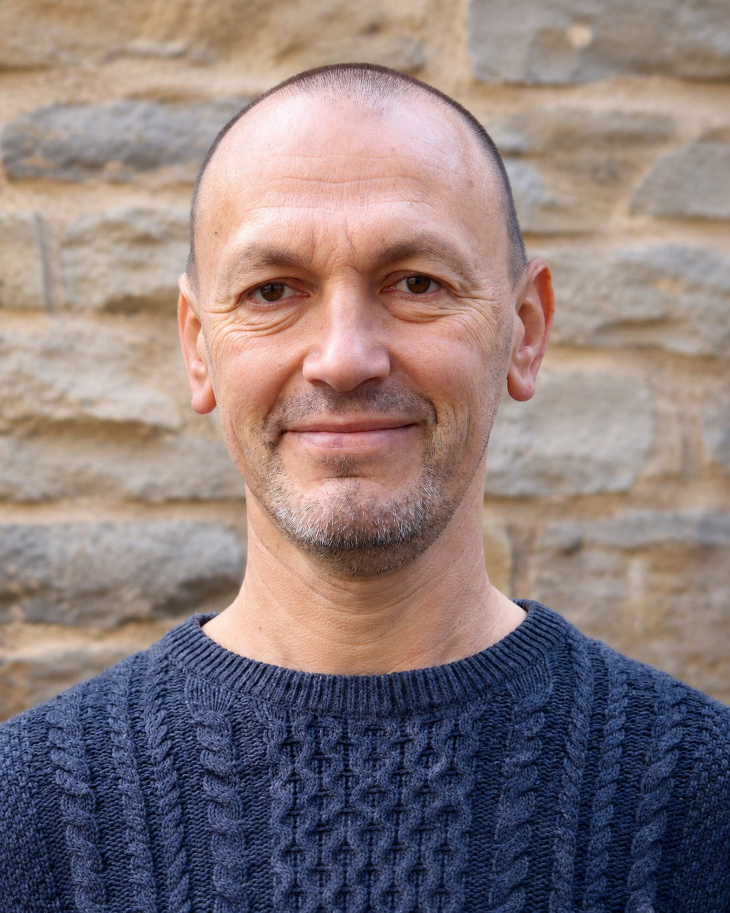

Über mich
17 Jahre Industrie, fünf Jahre Betriebsrat, heute Rauchfrei-Trainer (IFT) und Focusing-Therapeut (DFI). Ich kenne Betriebe von innen – und Sucht nicht nur aus der Theorie.

Über mich
Ich habe 17 Jahre in der Industrie gearbeitet: Ausbildung zum Industriemechaniker, später Produktionstechnik und Arbeitsvorbereitung im Sonderanlagenbau, dazu fünf Jahre im Betriebsrat. Ich weiß, wie eine Schicht läuft, was eine Maschine kostet, wenn sie steht, und wie ein Personalgespräch von beiden Seiten des Tisches aussieht.
Seit 2014 bin ich selbstständig. Heute begleite ich Unternehmen beim Thema Sucht: als Anlaufstelle für Mitarbeitende und Angehörige, mit Weitervermittlung ins Hilfesystem, mit Schulungen für Führungskräfte und mit Rauchfrei-Seminaren nach dem Programm des IFT. Am Berufsförderungswerk Nürnberg begleite ich außerdem Menschen nach langer Krankheit, auch nach Suchterkrankung, zurück in den Beruf.
Ich kenne Sucht nicht nur aus der Theorie.
Das ist meine Grundlage: durchlebte Erfahrung und das Handwerk, das ich mir danach erarbeitet habe. Beides zusammen, nicht eins ohne das andere. Meine Arbeit ist direkt, ehrlich und auf Augenhöhe – und sie ersetzt weder Therapie noch Beratungsstelle, sondern führt dorthin, wo jemand hingehört.
Beruflicher Werdegang
1991 – 1994
Ausbildung Kaufmann für Bürokommunikation
Mein erster Abschluss. Kaufmännische Grundlagen, die mir heute als Selbstständiger in Angebot, Kalkulation und Zusammenarbeit mit Einkauf und Personalabteilung zugutekommen.
1997 – 2014
17 Jahre Industrie: Produktionstechnik und Arbeitsvorbereitung
Ausbildung zum Industriemechaniker, dann Konstruktion und Montage von Produktionsanlagen, Projektleitung für Dosiertechnik in Lebensmittel- und Pharmaanwendungen, Arbeitsvorbereitung und Fertigungssteuerung.
2002 – 2007
Staatlich geprüfter Maschinenbautechniker
Berufsbegleitend neben der Vollzeitstelle in der Produktion, Urkunde der Regierung von Unterfranken.
2009 – 2014
Betriebsrat
Mitbestimmung bei Umstrukturierungen und Personalthemen, Einzelgespräche, Vermittlung bei Konflikten. Ich kenne die Perspektive der Belegschaft und die der Geschäftsleitung.
2011 – 2024
Focusing-Therapeut (DFI)
1.165 Seminarstunden über 13 Jahre: Theorie, Selbsterfahrung, methodisches Training und Supervision. Das Zertifikat wird auch vom Focusing Institute New York anerkannt.
Seit 2014
Selbstständig · Berufsförderungswerk Nürnberg
Begleitung von Erwachsenen nach langer Krankheit, auch nach Suchterkrankung, zurück auf den ersten Arbeitsmarkt. Dazu Auszubildende mit Reha-Status in inzwischen 14 Berufsfeldern.
Heute
Soul Sessions – Betriebliche Suchtbegleitung
Anlaufstelle in Betrieben für Mitarbeitende und Angehörige, Weitervermittlung ins Hilfesystem, Schulungen für Führungskräfte, Rauchfrei-Seminare nach dem Programm des IFT und die Rauchfrei Box.
Qualifikationen
Kontakt
Kein Commitment, kein Druck. Ein kurzes Gespräch kostet nichts – und manchmal ist das der erste richtige Schritt.
Kontakt aufnehmen